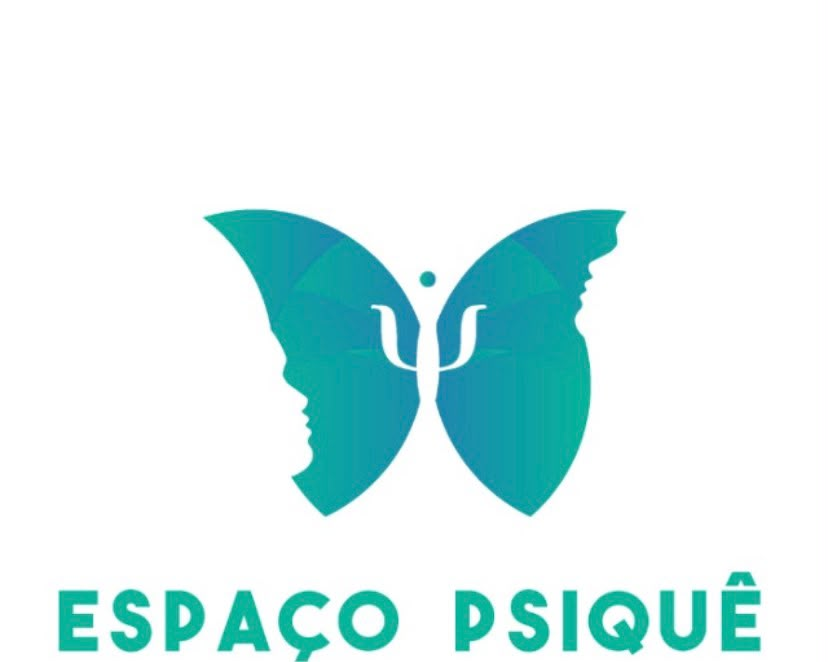

Foto da profissional
Nome do(a) Profissional
Especialidade · CRP 00/00000
Breve apresentação da formação e da forma de trabalho. Texto de exemplo, a ser substituído.
Espaço Psique Psicologia
Um ambiente seguro, humano e acolhedor para cuidar da sua saúde emocional, no seu tempo e do seu jeito.

Sobre o espaço
O Espaço Psique nasceu da ideia de que todo processo de transformação começa quando alguém se sente verdadeiramente escutado. Como a borboleta da nossa marca, acreditamos que mudar é um movimento delicado, gradual e profundamente pessoal.
Aqui, o cuidado emocional acontece em um ambiente seguro e sem julgamentos, com profissionais comprometidos com a ética, a escuta atenta e o respeito ao seu ritmo.
Psicologia e cuidado emocional
Você não precisa ter todas as respostas para começar a se compreender.
Sentir é humano. Pedir ajuda também.
Cada pessoa tem o seu tempo de florescer.
Terapia não é sobre ter algo errado. É sobre ganhar espaço para entender o que se sente, reconhecer os próprios limites e construir caminhos mais leves para viver.
Profissionais
Especialidade · CRP 00/00000
Breve apresentação da formação e da forma de trabalho. Texto de exemplo, a ser substituído.
Especialidade · CRP 00/00000
Breve apresentação da formação e da forma de trabalho. Texto de exemplo, a ser substituído.
Especialidade · CRP 00/00000
Breve apresentação da formação e da forma de trabalho. Texto de exemplo, a ser substituído.
Atendimentos
Modalidades de exemplo. Confirme com o espaço quais serão exibidas.
Descrição do serviço a ser confirmada.
Descrição do serviço a ser confirmada.
Descrição do serviço a ser confirmada.
Descrição do serviço a ser confirmada.
O ambiente
Como funciona
Envie uma mensagem pelo WhatsApp. Ninguém precisa explicar tudo de uma vez.
Verificamos horários e profissionais que melhor combinam com o que você procura.
Confirmado o horário, é só chegar. Vamos receber você com cuidado.
Perguntas frequentes
Basta clicar no botão de WhatsApp e enviar uma mensagem. Retornamos para combinar o melhor horário.
As modalidades disponíveis serão informadas no contato. Cada caso é conversado individualmente.
Não. Você pode chegar com dúvidas, com cansaço ou apenas com vontade de se ouvir. O processo se constrói aos poucos.
Essas informações são passadas diretamente pela equipe no momento do contato.
Sim. O sigilo é um princípio ético da profissão de psicólogo.
Contato e agendamento